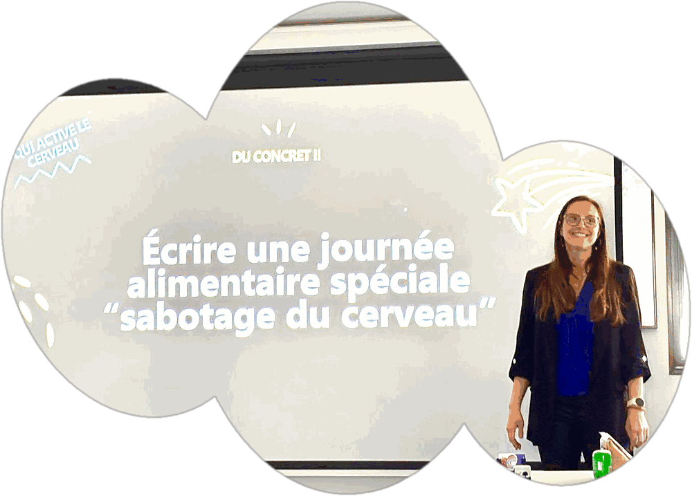
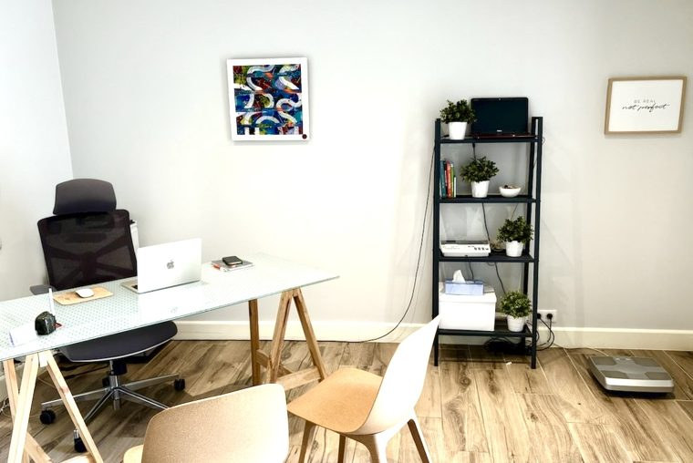

Diététique & hypnose
L'accompagnement signature : un suivi nutritionnel concret, soutenu par l'hypnose pour lever ce qui bloque. Idéal pour la perte de poids et la relation à l'alimentation.
Diététique & hypnose · Maisons-Alfort
Retrouvez énergie et fluidité en rééquilibrant votre assiette et votre esprit, sans prise de tête.
Mon approche
Soigner ce que vous mangez ne suffit pas toujours : il faut aussi apaiser ce qui vous pousse à manger. C'est là que mes deux métiers se rejoignent.
En route vers l'équilibre nutritionnel et émotionnel.
Des repères clairs, fondés sur la science et adaptés à votre vie. Pas de régime triste : des astuces simples, tenables, sans interdits.
Un travail tout en douceur sur les émotions, les automatismes et les compulsions, pour que le changement vienne de l'intérieur — à votre rythme.
La différence entre tenir un régime… et changer pour de bon.
Pourquoi venir me voir
Quel que soit votre point de départ, on construit ensemble une démarche qui vous ressemble.
Perdre du poids durablement et se réconcilier avec son corps, sans obsession des chiffres.
Diabète, cholestérol, stéatose, intolérances : mieux vivre au quotidien par l'alimentation.
Comprendre, apprivoiser puis transformer les pulsions — sans frustration ni culpabilité.
Démêler fatigue, grignotage et émotions pour retrouver de l'énergie.
Quand l'alimentation porte un poids émotionnel, on travaille la cause, pas juste le symptôme.
Adultes, enfants, ados, femmes enceintes ou allaitantes : des repères pour chacun.
Accompagnements
L'accompagnement signature : un suivi nutritionnel concret, soutenu par l'hypnose pour lever ce qui bloque. Idéal pour la perte de poids et la relation à l'alimentation.
Un accompagnement adapté à votre pathologie (diabète, cholestérol, stéatose, troubles digestifs…), en lien avec votre parcours de soin.
Des ateliers conviviaux pour apprendre en pratiquant — par exemple « alimentation & grossesse ». Pédagogie, plaisir et astuces à emporter.

En entreprise
Se remettre en mouvement, comme l'eau qui trouve toujours son chemin.
Témoignages
« Pour la première fois, je n'ai pas eu l'impression de suivre un régime. J'ai juste changé. »↳ témoignage d'exemple à remplacer
« L'hypnose a débloqué ce que des années de régimes n'avaient jamais réglé. »↳ témoignage d'exemple à remplacer
« À l'écoute, pleine d'astuces, et jamais culpabilisante. Ça fait du bien. »↳ témoignage d'exemple à remplacer

Premier rendez-vous
Un premier échange pour faire connaissance, comprendre vos objectifs, et voir ensemble — en douceur — comment avancer. Sans jugement, à votre rythme.
Prendre rendez-vous